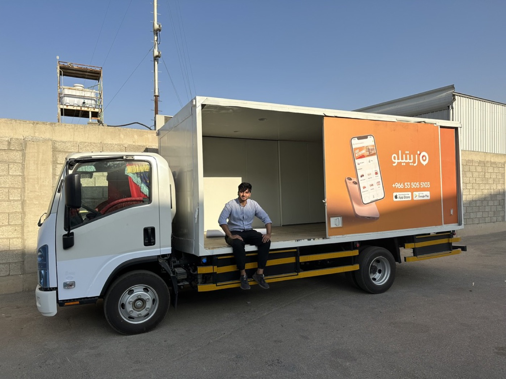

Adelaide, Australia
Syed Uzair Shah BukhariHe/HimProduct manager who builds with data
I spent 2.5 years building products at Retailo, a B2B marketplace startup in Saudi Arabia, Pakistan and the UAE, through fast growth, layoffs and a pivot to SaaS. Seeing how much good product decisions depend on data, I completed a Master of Data Science at the University of Adelaide in 2026.
What I bring
Startups
Built products under real constraints, from first wireframe to rollout in three countries.
Product
Turned messy operational problems into specs engineers could build and teams actually used.
Data
SQL, Python and machine learning to find problems early and prove what worked.
Experience
University of Adelaide and freelance
- Master of Data Science, University of AdelaideSep 2024 – Aug 2026
- Mathematics Tutor, Maths Learning CentreApr 2025 – Present
- Freelance data workPresent
Retailo Technologies
- Analyst, WarehousingOct 2021 – Jan 2022
- Associate Product Manager, OperationsFeb 2022 – Sep 2022
- Product Manager, Finance and DataOct 2022 – Mar 2024

- StockfloLed our in-house warehouse and inventory system from concept to launch across Saudi Arabia, Pakistan and the UAE. It handled $17.5M+ of monthly purchasing and raised inventory accuracy from 97% to 99%. Read the case study →
- Tax complianceTraced a $20K/month invoice discrepancy across the app, invoices and database with SQL, and got engineering to align all three: 100% ZATCA compliance.
- Supplier paymentsReplaced spreadsheet tracking and email approvals for supplier payments with a tracked request-and-approval flow between Commercial and Finance. Read the case study →
- Inventory visibilitySet up data pipelines and a real-time inventory dashboard that cut out-of-stock SKUs by 5%.
- SaaS: Master CatalogLed discovery for an electronics retail client: mapped where our per-warehouse catalog fell short, compared build-versus-buy options, and scoped a single company-wide catalog with product variants. Read the case study →
Case studies

Stockflo: replacing Odoo with our own warehouse management system
Building an in-house warehouse management system around how our teams actually worked.
Read the case study →Discovery: one product catalog for the whole company
Working out how to move product records from per-warehouse copies to a single company catalog with variants.
Read the case study →Inventory payments in Stockflo
Turning supplier payments from spreadsheets and email threads into a tracked approval flow.
Read the case study →Cash collection: closing out the delivery day
Making end-of-day cash deposits faster to record and easier to check.
Read the case study →Projects
Document Q&A with AI (RAG) →
Answers questions about a research paper using only the paper itself, with an evaluation set that checks correct answers and correct refusals. Compares Gemini with a locally run DeepSeek model.
Modelling logistics hubs →
Master's research: modelled a hub-and-spoke truck network as a Markov chain and simulated cost and revenue. A second unloading bay paid off; a third barely did.
AI vs human text detector →
Neural network that flags AI-written text, benchmarked against SVM baselines. About 0.95 validation AUC per sentence and 0.90 per paragraph on Kaggle.
Book catalogue scraper →
Scraped about 1,000 books across 50 pages with polite rate limiting, stored them in a SQL database and queried the results.